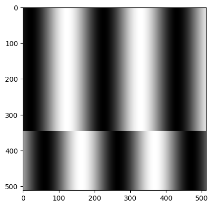

FEMTUS: worksheet / repository¶
This tutorial explains the data structure of the FEMTUS worksheet and how to access each layer.
Worksheet structure¶
The worksheet data is organized in a hierarchical structure:
worksheet
└─ element (per measurement result)
└─ content (ImageContent / GraphContent)
└─ dataset
└─ clump (raw numeric array)
Each layer is accessed by its Id and a corresponding function:
Layer |
Access function |
Key to next layer |
|---|---|---|
worksheet (list) |
|
|
worksheet |
|
|
element |
|
|
content |
|
|
dataset |
|
|
clump |
|
— |
raw bytes |
|
— |
Note
FEMTUS service must be running before executing any cell.
1from PyJEM.femtus import worksheet, repository
1. Worksheet¶
get_worksheets() returns a list of all worksheets.
Each worksheet has an Id and a Children list of element references.
Function |
Description |
|---|---|
|
Get all worksheets |
|
Get a single worksheet by Id |
1# Get all worksheets
2worksheets = worksheet.get_worksheets()
3print("worksheet count:", len(worksheets))
4
5# Pick the first worksheet and display its Id and Children count
6ws = worksheets[1] # [0] is the "Live" sheet.
7worksheet_id = ws["Id"]
8children = ws.get("Children", [])
9print("worksheet_id:", worksheet_id)
10print("element count:", len(children))
11
12print("# Worksheet detail")
13ws
worksheet count: 2
worksheet_id: 6d33305e-8d86-4867-917f-7d959c3398bb
element count: 7
# Worksheet detail
{'Id': '6d33305e-8d86-4867-917f-7d959c3398bb',
'Title': 'tutorial_sheet',
'Children': [{'Id': 'bd56ca45-7c58-4584-8ec6-beac308371c2',
'Title': 'HAADF_20260403_1411'},
{'Id': '8bbacf87-31fe-434f-98a2-97d7098a945f',
'Title': 'HAADF_SelectedArea_20260403_1411'},
{'Id': '80051f5e-2480-4612-ae21-b1f9e2c1957a',
'Title': 'EELS Line_20260403_1411'},
{'Id': 'f54e6008-d36e-4f9a-a2ce-377fa9848b76',
'Title': 'WholeSpectrum_EELS Line_20260403_1411'},
{'Id': '32b63852-2a7b-4d4d-b3e6-9999b32cc107',
'Title': 'HAADF_20260403_1441'},
{'Id': 'fd254d91-a51d-4eae-af32-122543a8e23f',
'Title': 'HAADF_SelectedArea_20260403_1441'},
{'Id': '41722e14-13e7-40cc-995f-f2a4e563b1aa',
'Title': 'EELS Line_20260403_1441'}]}
2. Element¶
A worksheet holds a list of elements in ["Children"].
Pass an element Id to get_worksheet_element() to retrieve its detail, including its ContentSummary.
Function |
Description |
|---|---|
|
Get element detail |
Key |
Id of the content (image or graph) |
Key |
Type of the content ( |
Key |
Display title of the element |
ContentType is used in 3 to select the appropriate access function for the content.
1# Use the worksheet_id obtained in 1
2ws_detail = worksheet.get_worksheet(worksheet_id)
3element_ref = ws_detail["Children"][0] # first element reference
4element_id = element_ref["Id"]
5
6# Get element detail
7element = worksheet.get_worksheet_element(element_id)
8print("element title:", element.get("Title"))
9content_id = element["ContentSummary"]["Id"]
10print("content_id:", content_id)
11print("ContentType:", element["ContentSummary"]["ContentType"])
12
13print("# Content detail")
14element
element title: HAADF_20260403_1411
content_id: fc23c92c-31c5-46e5-b0ba-e21e9d5ef185
ContentType: ImageContent
# Content detail
{'Id': 'bd56ca45-7c58-4584-8ec6-beac308371c2',
'Title': 'HAADF_20260403_1411',
'IsActive': False,
'IsEdited': True,
'IsLive': False,
'ContentSummary': {'Id': 'fc23c92c-31c5-46e5-b0ba-e21e9d5ef185',
'ContentType': 'ImageContent'}}
3. Content (Image / Graph)¶
Each element contains one content: either an ImageContent or a GraphContent.
The content holds a Children list of dataset references.
ContentType |
Function |
|---|---|
|
|
|
|
The next dataset Id is obtained from content["Children"][n]["Id"].
1# Use the content_id obtained in 2
2content_type = element["ContentSummary"]["ContentType"]
3
4if content_type == "ImageContent":
5 content = worksheet.get_image_content(content_id)
6else:
7 content = worksheet.get_graph_content(content_id)
8
9dataset_id = content["Children"][0]["Id"]
10print("content_type:", content_type)
11print("dataset_id:", dataset_id)
12
13print("# Content detail")
14content
content_type: ImageContent
dataset_id: 994ae97d-fb0b-4b17-b0ba-2eee53e4154b
4. Dataset¶
get_data_set(dataset_id) returns metadata and a reference to the clump.
The clump Id is in dataset["Clump"]["Id"].
Calibration information (offset, scale, unit) is in dataset["Clump"]["Information"]["MeasurementInformation"]["CalibrationCoefficients"].
Key |
Description |
|---|---|
|
Id of the raw data clump |
|
Shape of the array |
|
Axis calibration (offset, scale, unit) |
1# Use the dataset_id obtained in 3
2dataset = worksheet.get_data_set(dataset_id)
3clump_id = dataset["Clump"]["Id"]
4dimensions = dataset["Clump"]["Information"]["DataInformation"]["Dimensions"]
5calib = dataset["Clump"]["Information"]["MeasurementInformation"]["CalibrationCoefficients"][0]
6
7print("clump_id:", clump_id)
8print("dimensions:", dimensions)
9print("calibration:", calib)
10
11print("# Data set detail")
12dataset
clump_id: fe812832-11b6-424e-aa69-17814371ec62
dimensions: [512, 512]
calibration: {'Scale': 14.6875, 'Offset': 0, 'Unit': 'Nanometer'}
5. Clump¶
A clump holds the actual measurement data as a numeric array.
get_clump_num_array(clump_id)— returns array shape and type metadataget_clump_num_array_accessor(clump_id)— returns the raw bytes of the array
Function |
Returns |
|---|---|
|
|
|
|
1import numpy as np
2
3# Array shape and type metadata
4array_info = worksheet.get_clump_num_array(clump_id)
5print("array info:", array_info)
6
7# Raw bytes → NumPy array
8raw_bytes = worksheet.get_clump_num_array_accessor(clump_id)
9total_elements = 1
10for d in array_info["Dimensions"]:
11 total_elements *= d
12
13dtype_map = {1: np.uint8, 2: np.uint16, 4: np.float32, 8: np.float64}
14bytes_per_element = len(raw_bytes) // total_elements
15dtype = dtype_map.get(bytes_per_element, np.float32)
16
17narray = np.frombuffer(raw_bytes, dtype=dtype).reshape(array_info["Dimensions"])
18print("shape:", narray.shape, "dtype:", narray.dtype)
array info: {'ElementType': 'UInt16', 'Dimensions': [1, 512, 512], 'ElementCount': 262144, 'MemoryLoadableSize': 524288, 'WholeSize': 524288, 'ElementSize': 2, 'IsEdited': True}
shape: (1, 512, 512) dtype: uint16
1import matplotlib.pyplot as plt
2
3display = narray.squeeze() # remove size-1 dimensions
4
5if display.ndim == 1:
6 # Spectrum / profile
7 offset = calib["Offset"]
8 scale = calib["Scale"]
9 unit = calib["Unit"]
10 axis = offset + scale * np.arange(len(display))
11 plt.figure()
12 plt.plot(axis, display)
13 plt.show()
14elif display.ndim == 2:
15 plt.imshow(display, cmap="gray")
16else:
17 # 3D or higher: collapse spectral axis and show as 2D
18 img2d = display.sum(axis=-1)
19 plt.imshow(img2d, cmap="gray")

Repository: saving and loading worksheets¶
The repository package provides functions to save and load worksheet data as files.
Sheet: save / load a worksheet¶
A worksheet can be saved as a .jfw file and reloaded later.
Function |
Description |
|---|---|
|
Check whether the worksheet can be saved |
|
Save the worksheet to a |
|
Load a worksheet from a |
Warning
Loading a worksheet file that is already open in FEMTUS will result in an error.
1plain_sheet_path = "C:/tmp/tutorial_sheet.jfw"
2
3# Check if the worksheet can be saved
4can_write = repository.can_write_plainsheet(worksheet_id, plain_sheet_path)
5print("can_write:", can_write)
6
7if can_write.get("Result"):
8 # Save the worksheet
9 repository.write_plainsheet(worksheet_id, plain_sheet_path)
10 print("write_plainsheet: done →", plain_sheet_path)
11
12 # # Load the worksheet from file
13 # loaded = repository.read_plainsheet(plain_sheet_path)
14 # print("read_plainsheet:", loaded)
can_write: {'Result': True}
write_plainsheet: done → C:/tmp/tutorial_sheet.jfw
Element: save / load a single element¶
A single element (one measurement result) can be saved as a .jh5 file.
Function |
Description |
|---|---|
|
Save the element to a |
|
Load an element from a |
Warning
Loading a worksheet file that is already open in FEMTUS will result in an error.
1element_path = "C:/tmp/tutorial_element.jh5"
2
3# Save a single element
4repository.write_worksheet_element(element_id, element_path)
5print("write_worksheet_element: done →", element_path)
6
7# # Load the element from file
8# loaded_element = repository.read_worksheet_element(element_path)
9# print("read_worksheet_element:", loaded_element)
write_worksheet_element: done → C:/tmp/tutorial_element.jh5